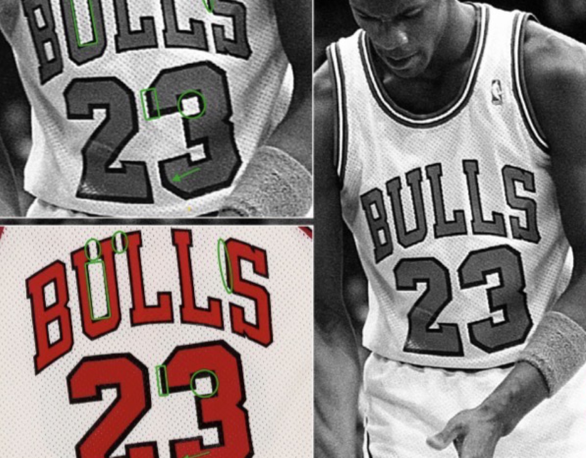
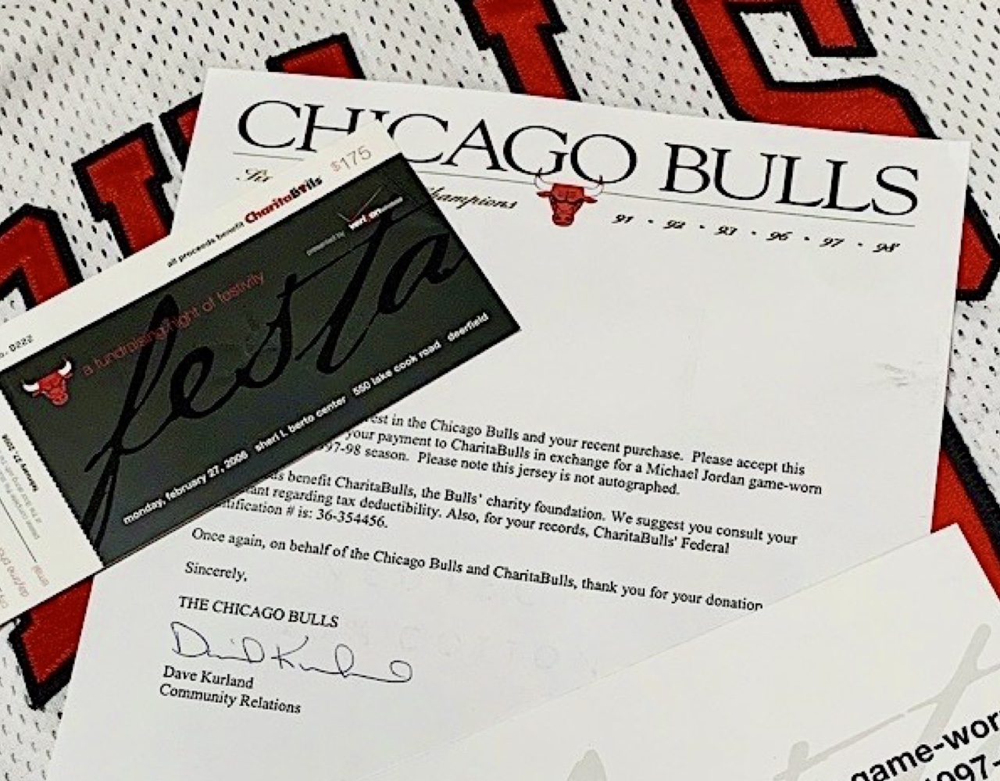
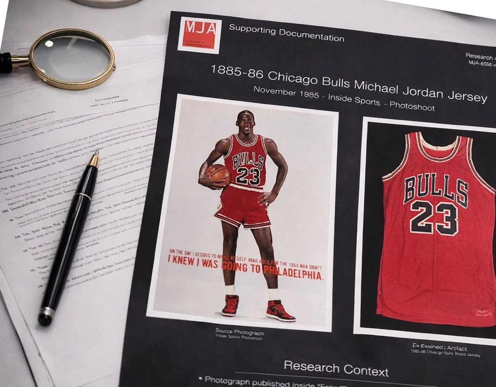
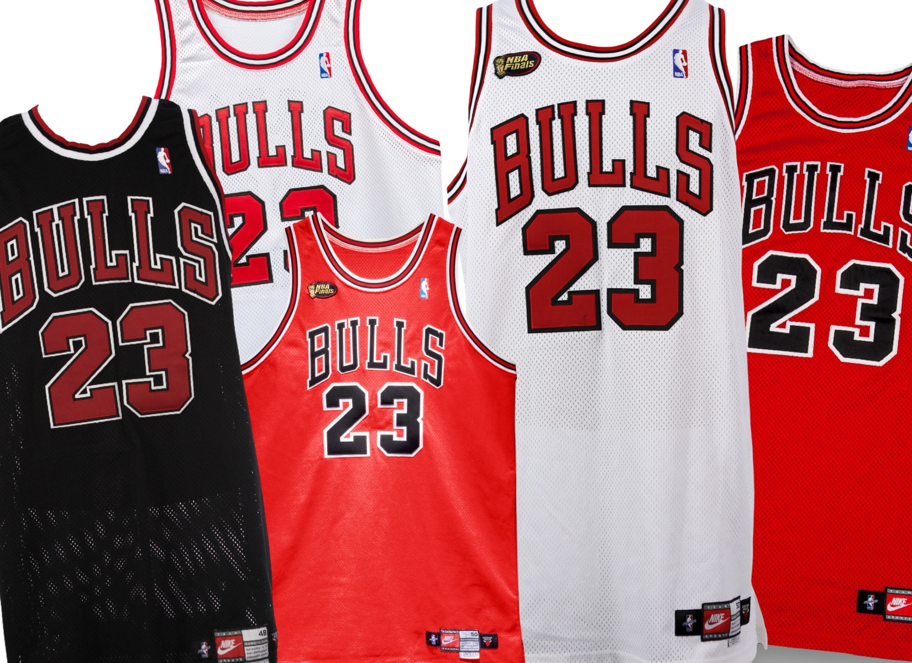

Photo-match Analysis
Comparative photographic analysis used to identify unique wear characteristics and match artifacts to documented in-game imagery.
- Game imagery comparison
- Wear pattern analysis
- Construction review
- Game identification
The Michael Jordan Archive provides independent research and photomatch analysis for collectors, institutions, and authentication firms seeking verified documentation of Michael Jordan game-worn artifacts.
Commissioned work is structured around visual evidence, historical reconstruction, and archival documentation rather than generic opinion.

Comparative photographic analysis used to identify unique wear characteristics and match artifacts to documented in-game imagery.

Historical and archival research documenting the ownership history and public record of Michael Jordan memorabilia.

Professional documentation prepared for collectors, auction houses, and authentication firms.

Population research identifying known examples of Michael Jordan game-worn uniforms within a given season or uniform style.
Commissioned research is available for collectors, institutions, and authentication firms. Private client work remains confidential unless permission is granted for publication.
Collectors, auction houses, and institutions seeking detailed research, documentation, or authentication support for Michael Jordan game-worn jerseys may contact the archive directly.
Contact the Archive